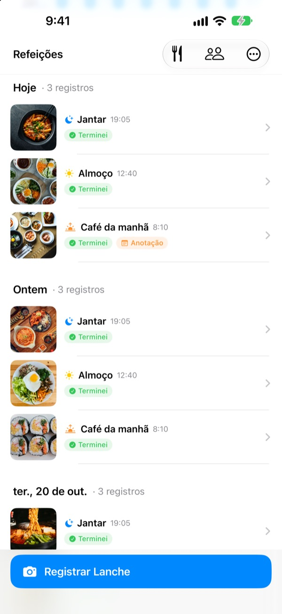
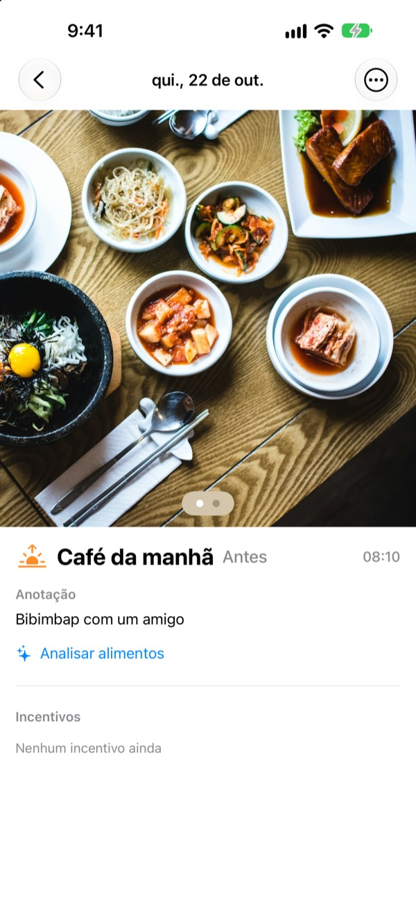
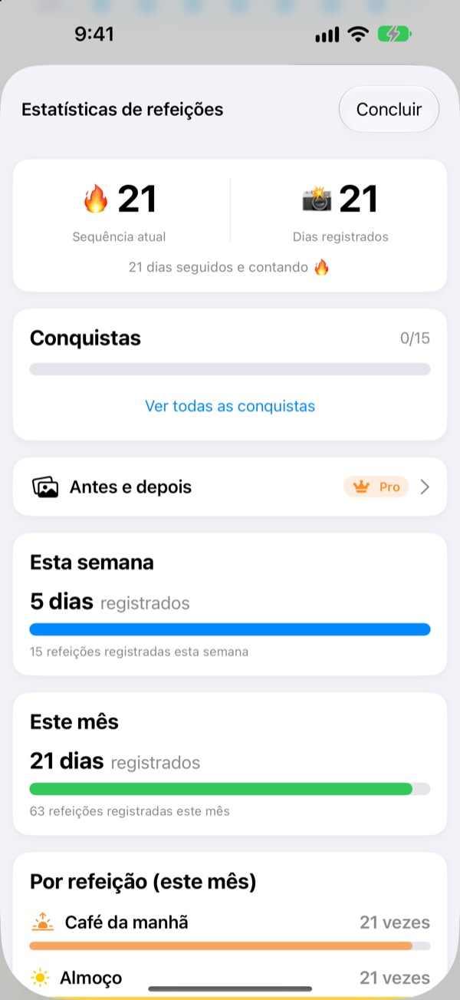
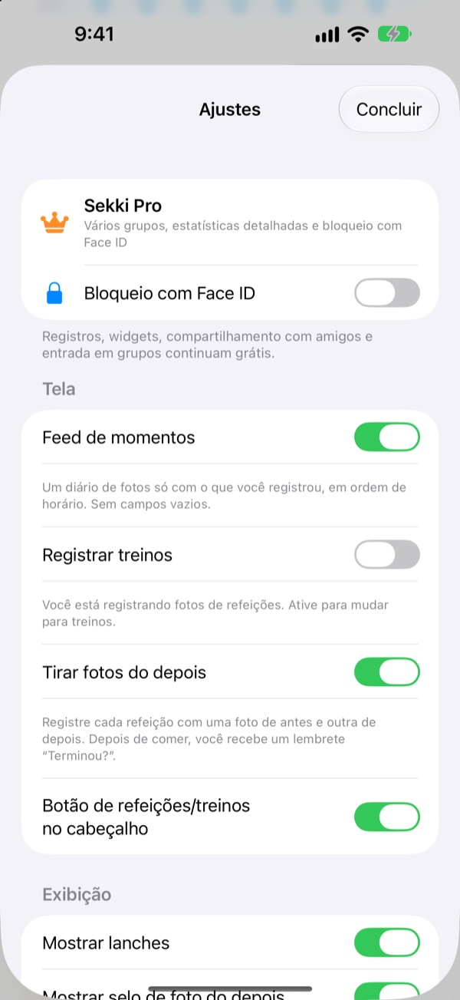

Uma foto antes de comer.
Pronto, registrado.
O Sekki olha a hora da foto e separa em café da manhã, almoço, jantar ou lanche. Registre só uma refeição por dia e sua sequência continua.
Registro, estatísticas, widgets e compartilhamento com amigos são grátis.

Experimente
Escolha um horário e toque no botão de registrar. Como no app, o botão já mostra a refeição daquele horário.
Já largou um diário alimentar em três dias?
Pulou um café da manhã, esqueceu um jantar, e os espaços vazios começam a incomodar até você apagar o app. O Sekki não tem espaços vazios. Só as refeições registradas se acumulam em ordem, e uma única foto já faz o dia contar.
Tirou a foto, a refeição já está no lugar
Pela hora da foto, o Sekki separa em café da manhã, almoço, jantar ou lanche. Adicione fotos de antes e depois, registre sem foto ou escreva uma nota.
A comida é reconhecida no próprio aparelho, de graça, e suas fotos nunca saem do celular.

Um registro que nunca diminui
Uma refeição por dia mantém a sequência, e o total de dias registrados nunca cai. As estatísticas da semana e do mês mostram quantos dias e refeições você registrou, não uma taxa de cumprimento.
No caminho você junta conquistas como Sequência de 7 dias e Madrugador.

Só as refeições que você escolhe, sem abrir o app
Escolha de quais refeições quer lembrete e ajuste os horários à sua rotina. Depois da foto de antes, marque Terminei direto na notificação.
Registre também pelo botão de Ação, Siri, Atalhos ou um widget, e adicione amigos por código para torcer uns pelos outros com emojis e comentários.

Comece em três passos
- 1
Escolha suas refeições
Na primeira vez, o Sekki pergunta de quais refeições lembrar. Dá para mudar nos Ajustes.
- 2
Foto antes de comer
O botão de registrar já mostra a refeição do horário. Toque, fotografe, pronto.
- 3
Acabou? Um toque
Toque em Terminei na notificação ou no widget, ou adicione uma foto de depois.
Registrar sem abrir o app
- Notificação
- Depois da foto de antes, marque Terminei direto no alerta
- Widget da Tela de Início
- Veja quantas refeições você registrou hoje e a que está em andamento, e toque em Terminei
- Widgets da Tela Bloqueada
- Retangular, circular e em linha
- Botão de Ação · Siri · Atalhos
- Marque Terminei com um toque ou uma frase
- Salvar em Fotos
- Ative nos Ajustes para ter álbuns do Sekki separados para refeições e treinos
- Modo treino
- Os treinos ficam separados das refeições, com os do mês num relance
O botão Terminei do widget exige iOS 17 ou posterior.
Registrar é grátis. O Sekki Pro vai além.
Grátis
- Registro com fotos e separação automática, fotos de antes e depois, notas
- Sequências, total de dias, estatísticas semanais e mensais, conquistas
- Lembretes das refeições escolhidas, Terminei sem abrir o app
- Widgets, botão de Ação, Siri e Atalhos
- Compartilhar refeições e treinos com amigos, emojis e comentários
- Criar um grupo e entrar em quantos quiser
- Reconhecimento de comida no aparelho
Sekki Pro
- Vários grupos: família, trabalho, galera do treino
- Comparar lado a lado as refeições de algumas semanas atrás com as de hoje
- Ver as comidas que você mais come
- Bloquear o app com Face ID ou Touch ID
Assinatura anual ou mensal, ou compra única vitalícia
A assinatura é renovada automaticamente se não for cancelada pelo menos 24 horas antes do fim do período. Cancele quando quiser em Ajustes > Conta Apple > Assinaturas. Termos de serviço: m1zz.github.io/RoutineCamera/pt-BR/terms.html
Perguntas frequentes
Onde ficam minhas fotos?
No seu aparelho. Se você ativar Salvar em Fotos automaticamente nos Ajustes, elas também vão para os álbuns do Sekki no Fotos. Enquanto Compartilhar minhas refeições estiver ativo (vem ativado), elas são enviadas ao iCloud para os amigos adicionados verem. Desative em Ajustes > Conta e compartilhamento.
Como adiciono amigos?
Na tela Amigos, compartilhe seu código de seis caracteres e digite o código do seu amigo. Dá para colar vários códigos de uma vez, separados por vírgula.
Como torço por um amigo?
Abra uma refeição do seu amigo e deixe um emoji ou um comentário curto. Se ele ainda não registrou, toque no espaço vazio para dar um cutucão.
Perco a sequência se pular uma refeição?
Não. Registre qualquer refeição no dia, lanches incluídos, e a sequência continua. Mesmo pulando um dia inteiro, o total de dias registrados não diminui.
Não recebo notificações.
Confira em Ajustes do iOS > Notificações se as notificações do Sekki estão permitidas e se o aparelho está conectado ao iCloud. Os horários dos lembretes mudam nos ajustes do app.
O reconhecimento de comida envia minhas fotos para um servidor?
Não. Ele roda no aparelho, então as fotos nunca saem do celular. É grátis e sem limite.
Como excluo minha conta e meus dados?
Vá em Amigos > Conta > Excluir conta. A conta e os dados de refeições no servidor são apagados e não podem ser recuperados. Se algo der errado, mande um e-mail.
Como cancelo a assinatura?
Em Ajustes > Conta Apple > Assinaturas. Ela é renovada automaticamente se não for cancelada pelo menos 24 horas antes do fim do período. A compra vitalícia é paga uma vez só.
Bugs, ideias ou dúvidas sobre a conta: escreva para leeo@kakao.com ou mande DM para @lee25_ios no Instagram. Costumamos responder em um ou dois dias.